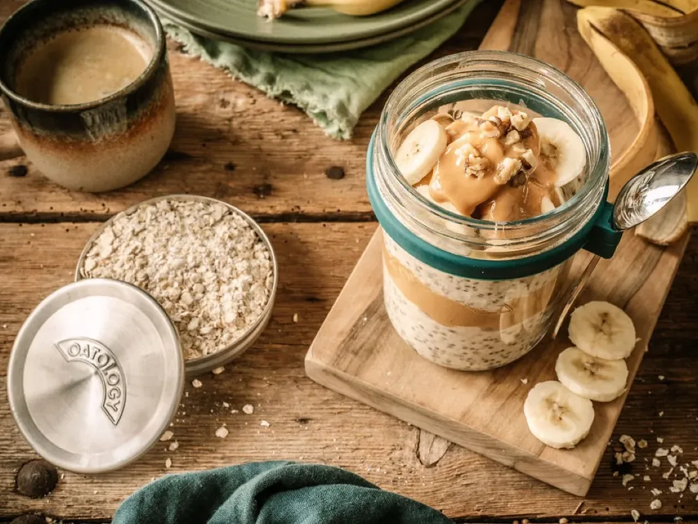

The Overnight Oats Ratio, in Grams
The overnight oats ratio is 50g rolled oats to 150ml milk, plus 1 tbsp chia seeds. The chia soaks up an extra 20ml or so of milk as it sets, so without it, drop to about 130ml. Scale it in straight lines: 100g and 300ml fills 2 jars, 200g and 600ml makes a batch of 4.
That is the whole formula. The rest of this page covers why grams beat cups, how the milk shifts for jumbo or instant oats, and how to rescue a jar that set wrong.

The overnight oats ratio: 50g oats to 150ml milk
Our house ratio is 50g rolled oats to 150ml milk, plus 1 tbsp of chia seeds. It carries more milk than the internet's classic rule because the tablespoon of chia soaks up an extra 20ml or so of milk as it sets. Leave the chia out and 50g of oats wants about 130ml instead.
We built the ratio into our own jar: the lid measures exactly 50g of oats, and the milk markings on the side run from 0 to 300ml. No jar with markings? A kitchen scale and a measuring jug get you to the same place.
Why grams beat cups for overnight oats
The classic internet rule is equal volumes: half a cup of oats to half a cup of milk. In real measurements that works out at roughly 45g of oats to 120ml of milk per half-cup scoop.
The trouble is the scoop itself. A half cup of rolled oats weighs 40g to 45g depending on how the flakes settle, so the same recipe can come out thick one day and loose the next. Milk behaves by volume; oats do not. Weigh the oats in grams, measure the milk in millilitres, and the jar comes out the same every time.
The overnight oats ratio for 2 jars, 3 jars, or a batch
The ratio scales in straight lines, so batch prep is just multiplication.
| Jars | Rolled oats | Milk | Chia seeds |
|---|---|---|---|
| 1 jar | 50g | 150ml | 1 tbsp |
| 2 jars | 100g | 300ml | 2 tbsp |
| 3 jars | 150g | 450ml | 3 tbsp |
| Batch of 4 | 200g | 600ml | 4 tbsp |
Scale it in a bowl and divide between jars, or make each jar up in its own jar, which sounds circular but skips the mixing bowl entirely.
How much milk for overnight oats, oat by oat
The ratio above assumes rolled oats and 1 tbsp of chia per jar. Other oats absorb differently, so the milk moves with them.
| Oat type | Milk per 50g | What to expect |
|---|---|---|
| Rolled (old-fashioned) | 150ml | The standard. Use the ratio as written |
| Jumbo | 150ml, or 160ml for a softer set | Stays chewier. Give it the full 8 hours |
| Instant or porridge oats | About 130ml | Absorbs faster and sets softer |
| Steel-cut | Not recommended | Stays hard and chewy on a standard overnight soak; needs 12+ hours or cooking, so we do not recommend it |
Add-ins that change the maths
- Chia seeds: every 1 tbsp drinks about 20ml of milk, which is why the house ratio runs at 150ml rather than 130ml.
- Greek yoghurt: 1 tbsp makes a noticeably thicker jar. Loosen it with a splash of milk in the morning if it needs it.
- Mashed banana or grated apple: a whole mashed banana brings enough moisture to drop the milk by about 10ml, which is how our Banana Bread jar lands on 140ml. Grated apple, or half a banana, and the milk stays as it is.
Too thick or too runny: the fixes
- Too thick: stir in a splash of milk in the morning until it loosens. Nothing else needed.
- Too runny: you likely used instant oats or skipped the chia. Add 1 tsp of chia seeds, stir, and give it 20 minutes to set.
If the question is whether a jar from earlier in the week is still good to eat, see How Long Do Overnight Oats Last.
The jar with the ratio built in
The OATOLOGY jar was designed around this exact ratio: the lid measures 50g of oats, and the milk markings on the glass run from 0 to 300ml, so a single jar or a double batch pours without a scale in sight. Comparing jars first? Our guide to the best jars for overnight oats covers the field.
Get the OATOLOGY jar on Amazon 2-pack, amazon.co.ukYour questions, answered
What is the ratio of oats to milk for overnight oats?
The overnight oats ratio is 50g rolled oats to 150ml milk, plus 1 tbsp chia seeds. The chia soaks up an extra 20ml or so of milk as it sets, which is why the milk runs higher than the old equal-volumes rule. Making it without chia? Use 50g oats to about 130ml milk.
What is the overnight oats ratio for 2 jars?
The overnight oats ratio for 2 jars is 100g rolled oats, 300ml milk, and 2 tbsp chia seeds; it scales in straight lines. Mix in a bowl and divide between jars, or build each jar with 50g, 150ml, and 1 tbsp. A batch of 4 takes 200g oats, 600ml milk, and 4 tbsp chia.
Can you make overnight oats with water instead of milk?
Yes, you can make overnight oats with water instead of milk. The oats still set overnight, but the result is thinner and less creamy. Half milk and half water is the compromise if you are short on milk. For a richer jar without dairy, use a creamier plant milk, such as oat, at the same 150ml.
Do jumbo oats need a different ratio to rolled oats?
Jumbo oats use the same ratio as rolled oats, 50g to 150ml milk with 1 tbsp chia, but the bigger flakes absorb more slowly and stay chewier. Give them the full 8 hours in the fridge, and if you prefer a softer jar, add an extra 10ml of milk.
Why are overnight oats measured in grams instead of cups?
Overnight oats are measured in grams because oats do not measure reliably by volume: a half cup of rolled oats weighs anywhere from 40g to 45g depending on how the flakes settle, and that swing changes the texture. Milk is fine by volume, so the ratio pairs 50g by weight with 150ml.
Put the ratio to work
- Peanut Butter & Banana Overnight Oats: the house ratio with peanut butter, mashed banana, and cinnamon.
- Banana Bread Overnight Oats: another favourite built on the same 50g base, with the milk nudged down to 140ml for the mashed banana.
- How Long Do Overnight Oats Last: storage times and the fridge rules.
- The Best Jars for Overnight Oats (UK): what to make it all in.
More overnight oats
Mango & Coconut, Chocolate & Raspberry, Apple Pie, and five more.
See all 8 recipes